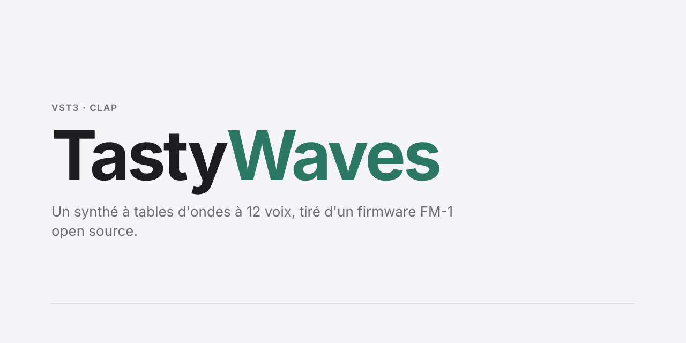

fm1-plugins
Plugins VST3 et CLAP tirés de firmwares FM-1 open source. Premier plugin prévu : TastyWaves, un synthé à tables d'ondes à 12 voix.
Le projet démarre : le code du plugin n'est pas encore publié.

Plugins VST3 et CLAP tirés de firmwares FM-1 open source. Premier plugin prévu : TastyWaves, un synthé à tables d'ondes à 12 voix.
Le projet démarre : le code du plugin n'est pas encore publié.